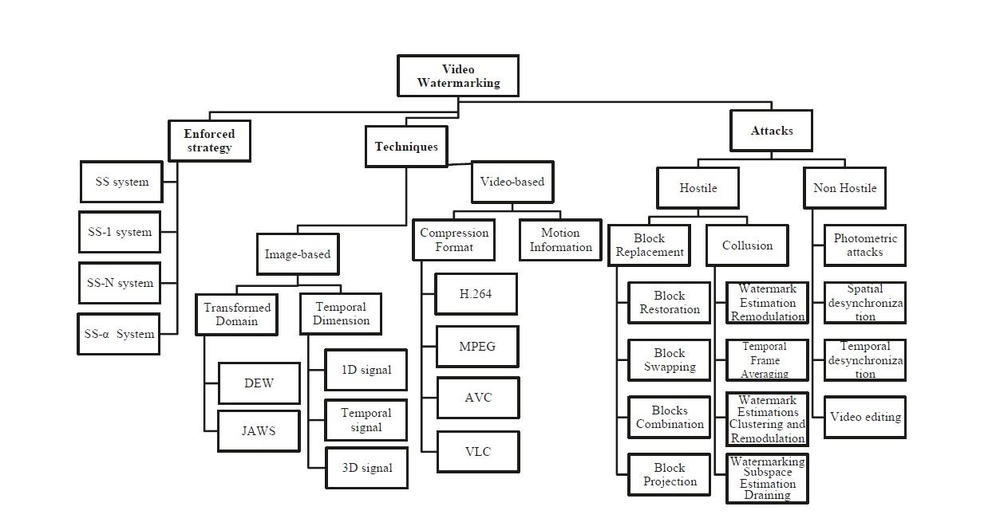
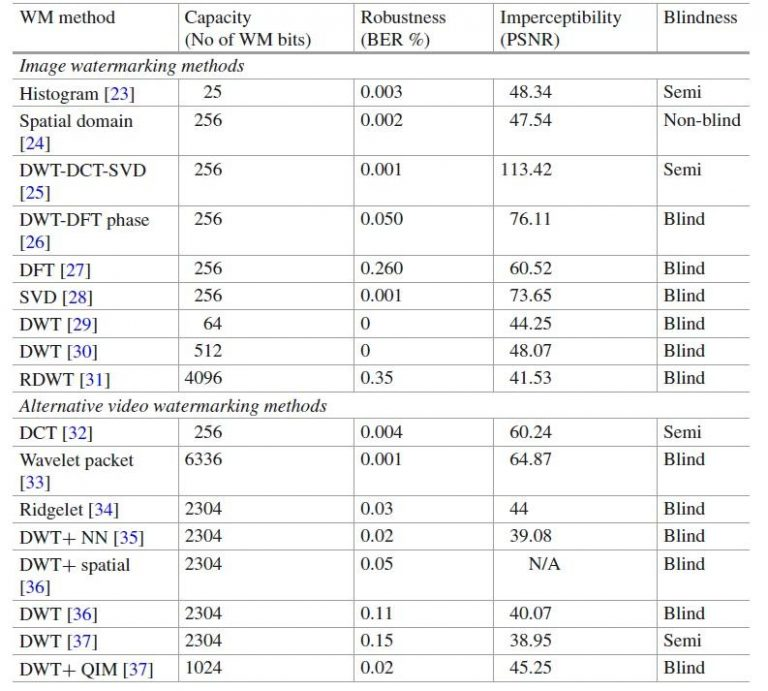
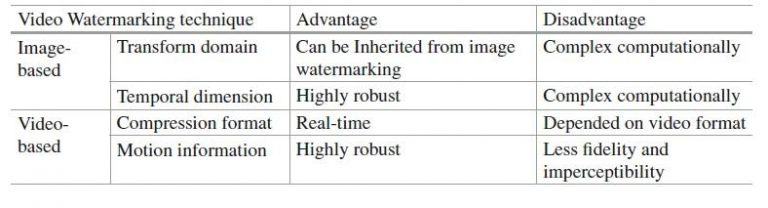

Data publicării: 03.05.2017
Autor articol: Anca Ignat
O extindere naturală a tehnicilor de marcare digitală a imaginilor o constituie marcarea fișierelor video [1], [2]. Un fișier video este o succesiune de imagini digitale numite și cadre. În afară de marcarea și atacurile obișnuite pentru imaginile digitale, pentru video apar atacuri suplimentare de tipul interschimbării cadrelor, medierea cadrelor, compresia și codarea specifice conținutului video.
În fișierele video digitale există trei tipuri majore de cadre: I, P și B.
Cadrele I (intra-coded) sunt cadre primare care sunt compresate minimal în raport cu cadrele P și B. Cadrele I nu sunt necesare pentru decodarea cadrelor P și B;
Cadrele P (predicted) sunt decompresate ținând cont de cadrele precedente (mai puțin cele de tip I);
Cadrele B (bipredictive) sunt cadrele cu rata de compresie cea mai mare iar decompresia se bazează atât pe cadrele precedente cât și pe cele următoare.
Informația de mișcare este memorată cu număr minim de biți într-un vector de mișcare. Cadrele sunt divizate în subblocuri și se face o comparație a fiecărei subimagini cu acceași regiune dintr-un cadru de referință, dacă există diferențe se memorează informația în vectorul de mișcare.
Tehnici de marcare video
Metodele de ascundere a informației pentru imaginile digitale pot fi adaptate și pentru fișierele video [3], [4], [5]. În general, marcajul este inclus în varianta necompresată a video-ului. Marcarea poate fi clasificată în două categorii: marcarea strict în imaginile-cadru și marcarea video. În Fig. 1 sunt trecute în revistă tipurile de marcaje video.

Marcarea care se bazează doar pe imaginile cadru presupune marcarea fiecărui cadru, ceea ce ar putea duce la un timp ridicate de includere a marcajului. Existența unui număr foarte mare de cadre într-un video face posibilă includerea mai multor marcaje simultan, acest tip de marcaj are dezavantajul că ar putea modifica percepția vizuală a video-ului.
Ca și în cazul imaginilor, în conținutul video pot fi incluse marcaje după ce în prealabil a fost aplicată o transformare spre un al domeniu decât cel spațial. Apoi este aplicată metoda „spread spectrum” (SS) pentru includerea marcajului. JAWS și DWE sunt două tehnici importante care folosesc acest tip de marcare.
JAWS (Just Another Watermarking System) este un sistem de marcare dezvoltat pentru transmisiunile video. Este un marcaj imperceptibil, robust la transformările care au loc pe parcursul unei transmisiuni a semnalului video, are o probabilitate redusă de alarme false (la detectare), are un grad de încărcare ridicat pentru video cu multe cadre și poate fi ușor extras permițând prelucrarea în timp real. DWE (Differential Energy Watermark) a fost dedus inițial pentru imagini digitale dar a fost adaptat pentru video de tip MPEG, marcajul fiind introdus în coeficienții de frecvență înaltă a transformatei cosinus discrete (DCT) a cadrelor de tip I.
Există multe metode de marcare care iau în considerație și dimensiunea temporală a unui video.
Marcarea video poate fi făcută după ce semnalul video a fost liniarizat, transformându-l într-un semnal 1D, care apoi este marcat.
În marcarea temporală se cunoaște poziția în cadre a unor regiuni care sunt comune cadrelor, se cunoaște evoluția temporală de-a lungul cadrelor a unor pixeli. Se vor folosi acei pixeli pentru marcarea video-ului. Pentru a realiza imperceptibilitatea marcării, de obicei se aleg fie regiuni de pe margini de culoare constantă fie regiuni care au e evoluție foarte rapidă în timp.
La marcarea video se poate ține cont de tipul de compresie folosit iar integrarea mesajului se face în domeniul transformat, cu tehnicile folosite la algoritmul de compresie. De exemplu, dacă are loc o compresie de tip MPEG, se folosesc coeficienții DCT pentru marcare, deoarece DCT este parte a procesului de compresie MPEG.
Pentru a reduce redundanța temporală, în standardele de compresie video a fost inclusă informația de mișcare. Acest vector de mișcare permite prezicerea cadrelor următoare ținând cont de cele curente. Prezența marcajului poate fi inclusă în vectorul de mișcare [6]. Marcarea folosind vectorul de mișcare este foarte robustă totuși în unele cazuri poate altera serios percepția vizuală a conținutului video.
Atacuri asupra marcajelor video
Sistemul de marcare poate fi ținta a diverse atacuri atunci când este folosit pentru autentificarea conținutului video sau pentru protecția copyright-ului. Fiecare tehnică de marcare are abilități de a rezista mai bine în fața anumitor tipuri de atacuri și de a nu face față altora. Deocamdată nu există o tehnică de marcare digitală care să reziste tuturor tipurilor de atacuri. Atacurile asupra marcajelor digitale pot fi împărțite în patru clase: atacuri simple, atacuri de desincronizare, atacuri de confuzie, atacuri de eliminare a marcajului [1], [2], [3], [4].
Atacurile simple sunt, de obicei, atacuri neintenționate, modificarea sau distrugerea marcajului este datorată manipulărilor video uzuale cum ar fi: schimbarea tipului de compresie/codare video, editări video (ștergere, inserare, reintroducere de cadre), distorsiuni geometrice introduse de conversiile digital-analog.
Pentru marea majoritate a marcajelor, este necesară cunoașterea poziției de includere a marcajului. Atacurile de desincronizare încearcă să distrugă sincronitățile dintre secvențele video și marcaj, în acest fel algoritmul de detectare a marcajului nu va mai putea recupera informația. Atacurile de desincronizare folosesc transformările geometrice cum ar zoom-ul, translațiile spațiale și/sau temporale, rotații, deplasarea unor pixeli, o altă eșantionare, inserarea sau extragerea unor pixeli sau grup de pixeli.
După cum sugerează și numele lor, atacurile de confuzie, încearcă să introducă neclarități sau inadvertențe în legătura cu marcajul inclus. Se creează un mesaj model la întâmplare, care este apoi introdus în video scăzându-se mesajul fals din video-urile marcate. Un alt mod de a introduce confuzie în ceea ce privește marcare, este de a introduce și alte marcaje în fișierul video. Prin introducerea de marcaje false, atacatorul poate pretinde drepturi de proprietate asupra conținutului video fals marcat.
Prin analiza datelor marcate digital și estimare a poziție și informației incluse, atacurile de ștergere au ca scop separarea mesajului de marcare de conținutul original marcat. Prin eliminarea marcajului, se obține un video nemarcat. Cele mai comune tehnici de eliminare a marcajelor sunt atacurile de complicitate (”collusion”), algoritmii de eliminare a zgomotului, filtre neliniare, tehnici de compresie speciale.
Vom trece în revistă în continuare, și alte scheme de atac asupra marcajelor video. Atacurile de tip TFA (Temporal Frame Averaging) se aplică atunci când un marcaj necorelat este inclus în cadrele video. Acest tip de atac se bazează pe observația că imaginile din cadre apropiate temporal au o probabilitate foarte mare de a fi asemănătoare fapt ce face posibilă aplicarea unor filtre de mediere temporale care să modifice sau să elimine marcajul. Acest tip de atac este potrivit pentru scenele statice, calitatea slabă a rezultatului atacului în cazul unor scene dinamice poate fi îmbunătățită prin înregistrare. Pentru scenele dinamice au fost dezvoltate atacurile de tip WER (Watermark Estimation Remodulation) care analizează cadrele pentru a estima marcajul, această estimare fiind îmbunătățită pe măsură ce sunt disponibile cadre noi. O variantă îmbunătățită a atacurilor WER este WECR (Watermark Estimations Clustering and Remodulation). În loc să se folosească informația din toate cadrele video-ului marcat, se folosesc doar anumite cadre cheie. Pentru a elimina marcajul se folosește algoritmul k-means pentru a-l găsi.
Tehnicile de tip BR (‚Block Replacement’) folosește un tip particular de redundanță temporală ce se bazează pe similarități în interiorul aceluiași cadru pentru a schimba semnalul video marcat cu unul similar dar cu marcajul afectat. Operația trebuie făcută cu mare atenție pentru a nu schimba conținutul vizual dar în același timp să se realizeze eliminarea marcajului. Pentru a realiza atât imperceptibilitatea cât și păstrarea calității video-ului se folosește o tehnică numită BC (‚Block Combination’) care selectează blocurile candidat pentru înlocuire fie adaptiv, fie în număr fix. Blocul optimal este ales, folosind a valoare de prag pentru a deduce gradul de asemănare a blocurilor. În varianta adaptivă de alegere a blocurilor se face o estimare a gradului de distorsiune introdus în video prin înlocuirea blocurilor și se selectează doar cele care nu introduc distorsiuni prea mari. În transmisia digitală, este posibil ca unele blocuri să fie corupte sau pierdute, recuperarea lor făcându-se prin tehnici de ascundere a erorii folosindu-se informația din blocurile vecine. Atacurile de tip Recuperare a Blocurilor aplică aceeași tehnică de ascundere a erorii pentru a îmbunătăți efectul atacurilor BR.
Proiectarea unui algoritm de marcare care să reziste la cât mai multe atacuri (intenționate sau neintenționate) este provocarea majoră la elaborarea metodelor de marcare digitală. În Tabelul 1 sunt prezentate diverse tehnici de marcare din punctul de vedere al robusteții, imperceptibilității și a capacității. În Tabelul 2 sunt prezentate avantajele și dezavantajele tehnicilor de marcare video care se bazează numai pe marcarea imaginilor și cele care iau în considerare întreg conținutul video.


Referințe bibliografice
Nematollahi, M. A., Vorakulpipat, C., & Rosales, H. G. (2016). Digital Watermarking: Techniques and Trends (Vol. 11). Springer.
Sadek, M. M., Khalifa, A. S., & Mostafa, M. G. (2015). Video steganography: a comprehensive review. Multimedia tools and applications, 74(17), 7063-7094.
Hartung, F., and B. Girod. 1998. Watermarking of uncompressed and compressed video. Signal Processing 66(3): 283–301.
Paul, R. T. (2011). Review of robust video watermarking techniques. IJCA Special Issue on Computational Science, 3, 90-95.
Isac, B., & Santhi, V. (2011). A study on digital image and video watermarking schemes using neural networks. International Journal of Computer Applications, 12(9), 1-6.
Liu, Y., & Zhou, P. (2014, January). A survey of Video Watermarking based on Motion Vector. In 2014 International Conference on Computer, Communications and Information Technology (CCIT 2014). Atlantis Press.